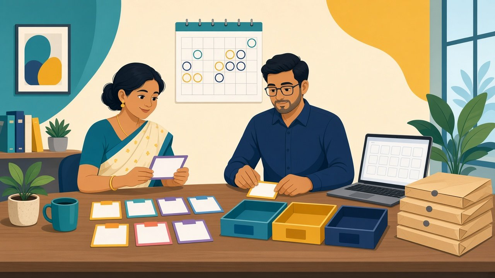

Pre-board season is here. CBSE does not set a common date sheet for pre-boards; each school sets its own, and the school calendars collected by Careers360 show Pre-Board I running from mid-November and Pre-Board II through December and into January. For many exam in-charges that means two or three full papers per subject, for Class 10 and Class 12, in about eight weeks, on top of the regular term tests for other classes.
Most schools still set these papers the hard way: a teacher opens last year's file, copies questions from a guide book, retypes the rest, and someone checks the total the night before printing. A school question bank changes that. Questions are written and checked once, tagged properly, and then picked for each paper. This post explains how to build one that is actually useful, and how to set a term or pre-board paper from it. It is written for principals, exam in-charges, heads of department and subject teachers, mainly in CBSE schools, though the method works for any board.
Start from CBSE's own pattern for 2026-27
Before anyone writes a question, read what the Board has already published for this year.
- Sample question papers and marking schemes. CBSE has put up the 2026-27 SQPs and marking schemes for Class X and Class XII on its academic website. Each one shows the sections, the marks per question, where internal choice is given and how marks are awarded.
- Paper composition. For 2026-27 theory papers, CBSE's stated composition is 50% competency-focused questions (MCQs, case-based, source-based integrated or other types), 20% select-response MCQs and 30% constructed-response short and long answers. This is set out for Class X and reported the same way for Class XII; confirm it against your subject's curriculum document, because a few subjects have their own structure.
- Theory and internal marks. Each subject's split between theory and practical, project or internal assessment comes from the curriculum and CBSE's circulars. A pre-board theory paper should carry the theory marks only.
The SQP is your template. The question bank is where the questions to fill that template come from.
What a question bank is (and is not)
A question bank is not a folder of old papers. Old papers are useful raw material, but you cannot pick from them quickly, and you cannot see at a glance which chapters are thin or which questions every student has already seen.
A working question bank is a list of individual questions, each with:
- The question itself, with any figure, passage or data it needs
- The answer or marking points, written at the same time as the question
- Enough tags that you can find it again and build a balanced paper
If a question has no marking points, it is not finished. Pre-board marking goes wrong far more often because of a vague answer key than because of a bad question.
How to tag every question
Agree the tags as a department before anyone adds questions, and keep them the same across subjects where you can. A practical set:
| Tag |
Example |
Why it matters |
| Class and subject |
Class 12, Physics |
Basic filtering |
| Chapter or unit |
Unit 4: Magnetic effects of current |
Covers the syllabus evenly |
| Question type |
MCQ, assertion–reason, case-based, source-based, short answer, long answer |
Matches the 50/20/30 composition |
| Marks |
1, 2, 3, 4, 5 |
Builds the section totals |
| Difficulty |
Easy, medium, hard (as judged by the HoD) |
Keeps the paper fair |
| Source |
CBSE SQP, NCERT, teacher-written, previous school paper |
Shows what students may already have seen |
| Last used |
Pre-Board I, Nov 2026, Class 12 A–D |
Stops repeats for the same batch |
| Reviewed by |
HoD initials and date |
Shows it has been checked |
Two of these are skipped most often and cause the most trouble. Source matters because CBSE's SQPs are public: students and coaching centres have them, so a pre-board built mostly from SQP questions tests memory, not understanding. Last used matters because the same Class 12 batch will sit two or three pre-boards; a repeated question rewards the students who happened to keep the last paper.
Building the bank without a summer project
You do not need a complete bank before the first pre-board. Build it in layers.
- Collect what you already have. Previous term tests, unit tests and pre-boards from the last two or three years, with their answer keys. Remove anything from chapters no longer in the syllabus.
- Add the Board's material, tagged as such. SQP questions and NCERT questions go in with source marked, so you can use them for practice and limit them in the pre-board.
- Ask each teacher for a small, regular contribution. A few new questions per chapter they teach, with marking points, is more realistic than a big push before exams. Case-based and source-based questions take longest to write, so share them out fairly.
- Review before a question goes live. The HoD or a second teacher reads the question, solves it and checks the marking points. Fix ambiguous wording now, not in the exam hall.
- Look for gaps. Once a month, count questions by chapter and type. Thin chapters and too few competency-focused questions are the usual gaps.
Setting a pre-board paper from the bank
With a tagged bank, setting a paper becomes a short, checkable job.
- Copy the structure of the subject's SQP. Same sections, same number of questions per section, same marks, same internal choices. Students should meet the Board's format before the Board exam.
- Fill a simple blueprint grid. Chapters down the side, question types across the top, marks in each cell. Check the row totals against the weightage in the curriculum and the column totals against the 50/20/30 composition.
- Pick questions to fill the grid. Filter by chapter, type and marks. Skip anything already used for this batch and limit SQP questions.
- Build the marking scheme alongside the paper, from the marking points already stored with each question. Add internal-choice answers.
- Have a second teacher sit the paper. Solving it against the clock catches wrong answers, missing data, unclear figures and papers that are too long for three hours.
- Make a second set if you need one. Schools that run two sittings, or give a separate paper to students who were absent, can pull a parallel set from the same grid with different questions of the same type and marks.
- Lock the final version. Record who approved it and when, and keep the draft and final files apart.
Keep the paper confidential
A question bank that every teacher can see is fine. A paper that every teacher can see is not.
- Keep the bank open to the subject's teachers, but restrict a set paper to the setter, the HoD and the exam in-charge.
- Print as close to the exam as practical, count the copies and seal them.
- If a paper or question leaks, mark it in the bank as retired so it is not picked again.
- Store the final paper and marking scheme with the exam record, so the moderation or re-check conversation later has the exact version that was set.
After the exam: make the bank better
The marks tell you which questions worked.
- If almost every student scored zero on a question, look at the wording before you blame the students.
- If a question did not separate strong students from weak ones, it may be too easy for a pre-board.
- Update difficulty tags and add a note against any question that confused students.
- Share the pattern with teachers: which chapters and question types the batch is weakest in, so revision before the Board exam goes where it is needed.
Common mistakes
- A pre-board made mostly of SQP or guide-book questions that students have already practised
- The same question appearing in Pre-Board I and Pre-Board II for the same batch
- A paper that does not follow the SQP's sections and internal choices
- Marking schemes written after the exam, by a different teacher, with different expectations
- One teacher setting, solving and approving the same paper
- No record of which version was printed
Where school software helps, and where it does not
ConnectEdu has a question bank in the exam module, where the school can store its questions in one place. It does not build or print question papers from the bank, so teachers still set and print the paper themselves. Nothing here replaces your teachers' judgement or CBSE's own instructions. The tags and the blueprint grid can live in a shared spreadsheet alongside it, and the SQPs, marking schemes and curriculum documents remain the reference.
What helps is keeping the exams and marks that follow in the same system as the rest of the school:
- Question bank. The exam module stores the school's questions in one place. Teachers still set and print the paper themselves.
- Exam scheduling. In the ConnectEdu Teacher App, teachers schedule an exam with a four-step wizard: pick the exam group and title, choose the class and section, build the subject timetable with maximum and pass marks, then check the students and save. The video tutorials walk through it.
- Marks entry. Teachers choose the class, section, subject and exam, type each student's marks and publish, or use AI Scan Sheet to photograph a paper mark sheet.
- Digital report cards tied to the same class, section and student records used for attendance and fees, with flexible grading for CBSE, ICSE, state boards or custom systems. See how we approach school exam management. If you are also planning for CBSE's two board exams for Class 10, the same records serve both.
- An audit log of edits to marks, fees, attendance and student details, so a changed pre-board mark has a trail. Read more about why a school ERP audit log matters.
- The Admin AI Agent. Answers come from live school data via secure database queries. Ask in any language, including Malayalam; answers come in English. Today it searches and answers only; it does not send reminders or take actions. A principal can ask, for example, "How many active students are there in the school?" while planning exam halls and invigilation.
Frequently asked questions
Is a question bank the same as CBSE's sample question paper?
No. The sample question paper shows the Board's format and the kind of questions to expect. A question bank is your school's own collection of tagged questions, which you use to fill that format for term tests and pre-boards.
Can we use SQP questions in a pre-board?
You can, but keep them to a small share and tag them by source. Students have usually practised the SQP already, so a pre-board built mostly from it does not show you how they will handle new questions.
How many questions does each chapter need?
Enough that you can set every paper this batch will sit, including any second set, without repeating a question. Count by chapter and question type, not just total questions, because competency-focused and case-based questions are usually the thinnest.
Should the class teacher set the paper for their own section?
It is better if the paper is set for the whole class or grade, checked by a second teacher and approved by the HoD. That keeps all sections on the same paper and stops one teacher's style from deciding the result.
Is this official CBSE guidance?
No. It is a planning guide for school exam teams. Always check the current curriculum, sample question papers, marking schemes and circulars on CBSE's own websites.
Talk it through with us
Book a ConnectEdu school demo if you want exam schedules, marks, report cards, attendance, fees and the parent app in one place before the pre-board season. Bring one subject's last paper; we will stay inside what the product can do today.
By ConnectEdu Team
Back to Blog